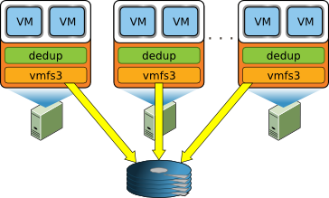
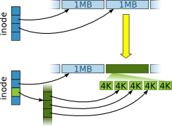
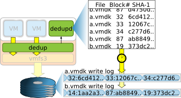
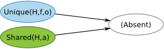
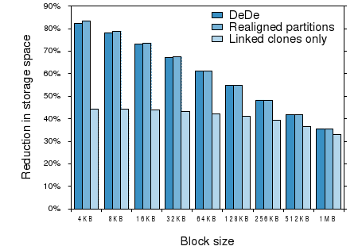
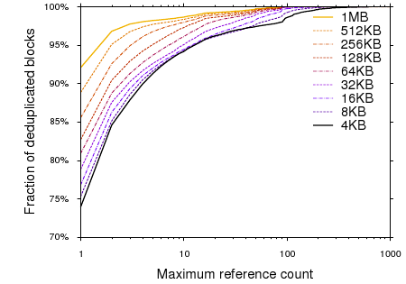
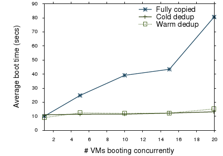

Decentralized Deduplication in SAN Cluster File Systems
| Austin T. Clements* Irfan Ahmad Murali Vilayannur Jinyuan Li |
|
| VMware, Inc. *MIT CSAIL |
|
Abstract
File systems hosting virtual machines typically contain many
duplicated blocks of data resulting in wasted storage space and
increased storage array cache footprint. Deduplication
addresses these problems by
storing a single instance of each unique data block and sharing it
between all original sources of that data. While deduplication is
well understood for file systems with a centralized component, we
investigate it in a
decentralized cluster file system, specifically in the context of
VM storage.
We propose DeDe, a block-level deduplication
system for live cluster file systems that does not require any central
coordination, tolerates host
failures, and takes advantage of the block layout policies of an
existing cluster file system.
In DeDe, hosts keep summaries of their own writes to the cluster file
system in shared on-disk logs. Each host periodically and
independently processes the summaries of its locked files, merges them
with a shared index of blocks, and reclaims any duplicate blocks.
DeDe manipulates metadata using general file system
interfaces without knowledge of the file system implementation.
We present the design, implementation, and evaluation of our techniques
in the context of VMware ESX Server. Our results show an 80%
reduction in space with minor performance overhead for realistic
workloads.
1 Introduction
Deployments of consolidated storage using Storage Area Networks (SANs)
are increasing, motivated by universal access to data from
anywhere, ease of backup, flexibility in provisioning, and centralized
administration. SAN arrays already form the backbone of modern data
centers by providing consolidated data access for multiple hosts
simultaneously. This trend is further fueled by the proliferation of
virtualization technologies, which rely on shared storage to support
features such as live migration of virtual machines (VMs) across hosts.
SANs provide multiple hosts with direct SCSI access to shared
storage volumes. Regular file systems assume exclusive
access to the disk and would quickly
corrupt a shared disk. To tackle this, numerous shared disk cluster
file systems have been developed, including VMware
VMFS [21], RedHat GFS [15], and IBM
GPFS [18], which use distributed locking to coordinate
concurrent access
between multiple hosts.
Cluster file systems play an important role in virtualized data
centers, where multiple physical hosts each run potentially hundreds
of virtual machines whose virtual disks are stored as regular
files in the shared file system. SANs provide hosts access to shared storage
for VM disks with near native SCSI performance while also enabling
advanced features like live migration, load balancing, and failover of
VMs across hosts.
These shared file systems represent an excellent opportunity for
detecting and coalescing duplicate data. Since they store data from
multiple hosts, not only do they contain more data, but data
redundancy is also more likely. Shared storage for VMs is a
ripe application for deduplication because common system
and application files are repeated across VM disk images and hosts can
automatically and transparently share data between and within VMs.
This is especially true of virtual desktop infrastructures
(VDI) [24], where desktop machines are virtualized,
consolidated into data centers, and accessed via thin clients. Our
experiments show that a real enterprise VDI deployment can expend as much as
80% of its overall storage footprint on duplicate data from VM disk
images. Given the desire to lower costs, such waste provides
motivation to reduce the storage needs of virtual machines both in
general and for VDI in particular.
Existing deduplication techniques [1, 3, 4, 5, 8, 14, 16, 17, 26]
rely on centralized file systems, require cross-host communication for
critical file system operations, perform
deduplication in-band, or use content-addressable storage.
All of these approaches have limitations in our domain.
Centralized techniques would be difficult to extend to a setting with
no centralized component other than the disk itself. Existing
decentralized techniques require cross-host communication for most
operations, often including reads. Performing
deduplication in-band with writes to a live file system can degrade
overall system bandwidth and increase IO latency. Finally,
content-addressable storage, where
data is addressed by its content hash, also suffers from performance
issues related to expensive metadata lookups as well as loss of
spatial locality [10].
Our work addresses deduplication in the decentralized setting of
VMware’s VMFS cluster file system. Unlike existing solutions, DeDe coordinates a cluster of hosts to cooperatively perform block-level
deduplication of the live, shared file system. It takes advantage of
the shared disk as the only centralized point in the system and does not
require cross-host communication for regular file system operations,
retaining the direct-access advantage of SAN file systems. As a
result, the only failure that can stop deduplication is a failure of
the SAN itself, without which there is no file system to deduplicate.
Because DeDe is an online system for primary storage, all
deduplication is best-effort and performed as a background process,
out-of-band from writes, in order to minimize impact on system
performance. Finally, unlike other systems, DeDe builds block-level
deduplication atop an existing file system and takes advantage of
regular file system abstractions, layout policy, and block addressing.
As a result, deduplication introduces no additional metadata IO when
reading blocks and permits in-place writes to blocks that have no
duplicates.
This paper presents the design of DeDe. We have implemented a
functional prototype of DeDe for VMware ESX Server [23]
atop VMware VMFS. Using a variety of synthetic and realistic
workloads, including data from an active corporate VDI installation,
we demonstrate that DeDe can reduce VM storage requirements by
upwards of 80% at a modest performance overhead.
Section 2 provides an overview of the architecture of our
system and our goals. Section 3 details the system’s
design and implementation.
We provide a quantitative evaluation of our system
in Section 4, followed by a discussion of related
work in Section 5. Finally,
we conclude in Section 6.

| Figure 1: Cluster configuration in which multiple hosts
concurrently access the same storage volume. Each host runs the
VMFS file system driver (vmfs3), the deduplication
driver (dedup), and other
processes such as VMs. |
2 System Overview
DeDe operates in a cluster setting, as shown in
Figure 1, in which multiple hosts are directly
connected to a single, shared SCSI volume and use a file system designed
to permit symmetric and cooperative access to the data stored on the
shared disk. DeDe itself runs on each host as a layer on top of the
file system, taking advantage of file system block layout policies and
native support for copy-on-write (COW) blocks. In this section, we
provide a brief overview of our approach to deduplication and the file
system support it depends on.
DeDe uses content hashes to identify potential duplicates,
the same basic premise shared by all deduplication systems. An index
stored on the shared file system and designed for concurrent access
permits efficient duplicate detection by tracking all known blocks in
the file system by their content hashes.
In order to minimize impact on critical file system operations such as
reading and writing to files, DeDe updates this index out of
band, buffering updates and applying them in large, periodic
batches. As part of this process, DeDe detects and eliminates
duplicates introduced since the last index update. This can be
done as an infrequent, low priority
background task or even scheduled during times of low
activity. Unlike approaches to deduplication such as
content-addressable storage that integrate content indexes directly
into the file system storage management, DeDe’s index serves solely to
identify duplicate blocks and plays no role in general file system
operations.
DeDe divides this index update process between hosts. Each host
monitors its own changes to files in the cluster file system and
stores summaries of recent modifications in on-disk write logs.
These logs include content hashes computed in-band, as blocks are
written to disk. Each host periodically consumes the write logs of files
it has (or can gain) exclusive access to and updates the shared index
to reflect these recorded modifications. In
the process, it discovers and reclaims any block whose content is
identical to the content of some previously indexed block. Having
each host participate in the index update process allows the hosts to
divide and distribute the burden of deduplication, while sharing the
index allows hosts to detect duplicates even if they are introduced by
separate hosts.
Out-of-band index updates mean DeDe must be resilient to stale index
entries that do not reflect the latest content of recently updated
blocks. Indeed, this is essentially unavoidable in a decentralized
setting because of communication delays alone. While this means DeDe generally must verify block contents when updating the index, this
resilience has an important implication: DeDe’s correctness does not
depend on its ability to monitor every write to the file system. This
has important performance benefits. First, updates to write logs do
not have to be crash-consistent with updates to file contents, which
both simplifies fault tolerance and allows hosts to buffer updates to
write logs to minimize additional IO. Second, this allows users to
trade off the CPU and memory overhead of write
monitoring for peak file system performance on a per-file basis. For
example, a user could simply disable deduplication for VMs that are
performance-critical or unlikely to contain much duplicate data.
Finally, this allows the write monitor to shed work if the system is
overloaded.
Because DeDe operates on a live file system, it specifically
optimizes for unique blocks (blocks with no known duplicates).
Unlike shared blocks, these blocks remain mutable after
deduplication. The mutability of unique blocks combined with DeDe’s
resilience to stale index information means these blocks can be
updated in place without the need to allocate space for a copy or to
synchronously update the index. As a result, deduplication has no
impact on the performance of writing to unique blocks, a highly
desirable property
because these are precisely the blocks that do not benefit from
deduplication.
Similar to some other deduplication work related to virtual
disks [10, 13], DeDe uses fixed-size
blocks. Unlike stream-oriented workloads such as backup, where
variable-sized chunks typically achieve better
deduplication [26], our input data is expected to be
block-structured because guest file systems (e.g., ext3, NTFS)
typically divide the disk into fixed-size 4 KB or 8 KB blocks
themselves. Consistent with this expectation, earlier
work [12] and our own test results (see
Section 4.1), we use a block size of 4 KB.
2.1 Required File System Abstractions
Most approaches to deduplication unify duplicate elimination and
storage management, supplanting the file system entirely. DeDe, in
contrast, runs as a layer on top of VMFS, an existing file system.
This layer finds potentially identical blocks and identifies them to
the file system, which is then responsible for merging these blocks
into shared, copy-on-write blocks.
DeDe requires the file system to be block oriented and to support
file-level locking. The file
system block size must also align with the deduplication block size, a
requirement VMFS’s default 1 MB block size, unfortunately, does not
satisfy. Our only non-trivial change to VMFS was to add support for
typical file system block sizes (i.e., 4 KB), as detailed later in
Section 2.2.
Finally, DeDe requires block-level copy-on-write support, a well
understood, but nevertheless uncommon feature supported by VMFS.
Specifically, it requires an unusual compare-and-share operation,
which replaces two blocks with one copy-on-write block after verifying
that the blocks are, in fact, identical (using either bit-wise
comparison or a content hash witness). Despite the specificity of
this operation, it fits naturally into the structure of block-level
copy-on-write and was easy to add to the VMFS interface. DeDe manipulates file system blocks solely through this interface and has
no knowledge of the underlying file system representation.
There are two noteworthy capabilities that DeDe does not
require of the file system. First, hosts running DeDe never modify
the metadata of files they do not have exclusive locks on, as doing so
would require cross-host synchronization and would complicate per-host
metadata caching. As a result, a host that discovers a duplicate block
between two files cannot simply modify both files to point to the
same block if one of the files is locked by another host. Instead,
when DeDe detects a duplicate between files locked by different
hosts, it uses a third file containing a merge request as an
intermediary. One host creates a merge request containing a COW
reference to the deduplicated block, then passes ownership of the
merge request file’s lock to the other host, which in turn replaces
the block in its file with a reference to the block carried by the
merge request.
Second, DeDe does not require the file system to expose a
representation of block addresses. Much like any regular application,
it only refers to blocks indirectly, by their offset in some
locked file, which the file system can resolve into a block
address. This restricts the design of our index, since it cannot
simply refer to indexed blocks directly. However, this limitation
simplifies our overall design, since requiring the file system to expose block
addresses outside the file system’s own data structures would
interfere with its ability to free and migrate blocks and could result
in dangling pointers. Worse, any operations introduced to manipulate
blocks directly would conflict with file-level locking and host
metadata caching.
In lieu of referring to blocks by block addresses, DeDe introduces a
virtual arena file. This is a regular file in the file system,
but it consists solely of COW references to shared blocks that are
present in at least one other file. This file acts as an alternate
view of all shared blocks in the system: DeDe identifies shared
blocks simply by their offsets in the virtual arena file, which the
file system can internally resolve to block addresses using regular
address resolution.
Because DeDe builds on the underlying file system, it inherits the
file system’s block placement policy and heuristics. If the
underlying file system
keeps file blocks sequential, blocks will generally remain sequential
after deduplication. Shared blocks are likely to be sequential with
respect to other blocks in at least one file, and common sequences of
shared blocks are likely to remain sequential with respect to each
other. Furthermore, the placement and thus sequentiality of unique
blocks is completely unaffected by the deduplication process; as a
result,
deduplication does not affect IO performance to individual unique
blocks because they do not require copying, and it maintains
sequential IO performance across spans of unique blocks.
Many of the design decisions in DeDe were influenced by the design of
its substrate file system, VMFS. VMFS is a coordinator-less cluster
file system [21] designed to allow hosts to
cooperatively maintain a file system stored on a shared disk. In this
section, we provide a quick overview of how VMFS addresses and
manages concurrent access to its resources in order to provide better
context for the design of DeDe.
VMFS organizes the shared disk into four different resource pools:
inodes, pointer blocks, file blocks, and sub-blocks. Inodes and
pointer blocks play much the same role as in traditional UNIX file
systems, storing per-file metadata and pointers to the blocks
containing actual file content. File blocks and sub-blocks both store
file content, but are different sizes, as discussed below. The
divisions between these pools are currently fixed at format time and
can only be expanded by adding more storage, though this is not a
fundamental limitation. In each pool,
resources are grouped into clusters. The header for each cluster
maintains metadata about all of its contained resources; most
importantly, this includes a reference count for each
individual resource and tracks which resources are free and which are
allocated.
In order to support concurrent access by multiple hosts to file and
resource data, VMFS uses a distributed lock manager.
Unlike most cluster file systems, which use an
IP network for synchronization, VMFS synchronizes all file system
accesses entirely through the shared disk itself using on-disk locks.
VMFS ensures atomic access to on-disk lock structures themselves using
SCSI-2-based LUN reservations to guard read-modify-write critical
sections. In addition to taking advantage of the reliability of
storage area networks, using the same means to access both file system
state
and synchronization state prevents “split brain” problems typical of
IP-based lock managers in which multiple hosts can access the file
system state but cannot communicate locking decisions with each other.
VMFS protects file data from concurrent access by associating a
coarse-grain lock with each file that covers all of a file’s metadata
(its inode and pointer blocks) as well as all of the file blocks and
sub-blocks comprising the file’s content. Files in VMFS tend to be
locked for long durations (e.g., a VM’s disk files are locked as long
as the VM is powered on). DeDe respects file system locking by
partitioning the deduplication process according to which hosts hold
which file locks.
VMFS protects resource metadata using per-cluster locks. Thus,
allocation and deallocation of resources must lock all clusters
containing any of the resources involved. The number of resources
packed per cluster reflects a trade-off between locking overhead and
cross-host cluster lock contention. Higher cluster density allows
hosts to manipulate more resources with fewer locks, but at the cost of
increased lock contention. Since DeDe stresses the sub-block resource pool
more than typical VMFS usage, we increase the sub-block cluster
density from 16 to 128 resources per cluster, but otherwise use the
default VMFS densities.

| Figure 2: Mixed block sizes allow any 1 MB file block to be divided into
256 separate 4 KB sub-blocks. |
VMFS maintains two separate resource types for storing file content:
file blocks and sub-blocks. File sizes in VMFS typically fit a
bimodal distribution. Virtual machine disks and swap files are
usually several gigabytes, while configuration and log files tend to
be a few kilobytes. Because of this, VMFS uses 1 MB file blocks to
reduce metadata overhead and external fragmentation for large files,
while for small files, VMFS uses smaller
sub-blocks to minimize internal fragmentation.
DeDe must be able to address individual 4 KB blocks in order to COW
share them, so we configure VMFS with 4 KB sub-blocks.
Furthermore, rather than simply eschewing the efficiency of 1 MB blocks
and storing all file content in 4 KB blocks, we extend VMFS to
support mixed block sizes, depicted in
Figure 2, so that DeDe can address
individual
4 KB blocks of a file when it needs to share a duplicate block, but
when possible still store unique regions of files in efficient 1 MB
blocks. This change introduces an optional additional pointer block
level and allows any file block-sized region to be broken into 256
separate 4 KB blocks, which, in turn, add up to the original file
block. This can be done
dynamically to any 1 MB block based on deduplication decisions,
and leaves address resolution for other data intact and efficient.
Beyond these unusual block sizes, VMFS supports a number of other
uncommon features. Most important to DeDe is support for block-level
copy-on-write (COW). Each file or sub-block resource can be
referenced from multiple pointer blocks, allowing the same data to be
shared between multiple places in multiple files. Each reference to a
shared resource is marked with a COW bit, indicating that any attempts
to write to the resource must make a private copy in a freshly
allocated resource and write to that copy instead. Notably, this COW
bit is associated with each pointer to the resource, not with the
resource itself. Otherwise, every write operation would need to take
a cluster lock to check the COW bit of the destination block, even if
the block was not COW. However, as a result, sharing a block between
two files requires file locks on both files, even though only
one of the references will change. Thus, DeDe must use merge
requests for all cross-host merging operations.
VMFS forms the underlying substrate of DeDe and handles critical
correctness requirements such as specializing COW blocks and
verifying potential duplicates, allowing DeDe to focus on
duplicate detection. Virtual arenas and merge requests
allow DeDe to achieve complex, decentralized manipulations of the
file system structure without knowledge of the file system
representation, instead using only a few general-purpose interfaces.
3 Design and Implementation
In this section, we provide details of the design and implementation
of DeDe’s best-effort write
monitoring subsystem and the out-of-band indexing and duplicate
elimination process.
3.1 Write Monitoring

| Figure 3: Only a lightweight kernel module lies
in the IO critical path, opportunistically calculating hashes of
blocks while they are still in memory. A userspace daemon (dedupd) flushes write logs to disk periodically. Duplicate
detection and elimination occur out of band. |
Each host runs a write monitor, as shown in
Figure 3, which consists of a lightweight
kernel module (dedup) that monitors all writes by that host
to files in the file system and a userspace daemon (dedupd) that
records this information to logs stored in the shared file system.
The write monitor is the only part of the system that lies in the
IO critical path of the file system, so the write monitor itself must
incur as little additional disk IO and CPU overhead as possible.
The kernel module provides the userspace daemon with a modification
stream indicating, for each write done by the host: the file modified,
the offset of the write, and the SHA-1 hashes of all modified
blocks. While the in-band CPU overhead of the monitor could have been
virtually eliminated by computing these hashes lazily (e.g., at
indexing time), this would have required reading the modified blocks
back from disk, resulting in a large amount of additional random IO.
We opted instead to eliminate the extra IO by computing these hashes
while the blocks were in memory, though the trade-off between run-time
CPU overhead and deduplication-time IO overhead could be set
dynamically by user-defined policy.
The userspace daemon divides the modification stream by file,
aggregates repeated writes to the same block, and buffers this
information in memory, periodically flushing it to individual write
log files associated with each regular file. These write logs are
stored on the shared file system itself, so even if
a host fails or transfers ownership of a file’s lock, any other host
in the system is capable of reading logs produced by that host and
merging information about modified blocks into the index.
The daemon can safely buffer the modification stream in memory because
the index update process is designed to deal with stale
information. Without this, write logs would have to be consistent
with on-disk file state, and each logical write to the file system
would result in at least
two writes to the disk. Instead, buffering allows our system to
absorb writes to over 150 MB of file blocks into a single infrequent
1 MB sequential write to a log file. This is the only additional IO
introduced by the write monitor.
Similarly, we rely on the best-effort property of write monitoring to
minimize IO in the case of partial block writes. If a write
to the file system does not cover an entire block, the monitor simply
ignores that write, rather than reading the remainder of the block
from disk simply to compute its hash. In practice, this is rarely a
problem when writes originate from a virtual machine, because guest
operating systems typically write whole guest file system blocks,
which are generally at least 4 KB.1
Write monitoring can be enabled or disabled per file.
If the performance of some VM is too critical to incur the
overhead of write monitoring or if the system administrator has
a priori knowledge that a VM’s duplication ratio is small, such VMs
can be opted out of deduplication.
3.2 The Index
The shared on-disk index tracks all known blocks in the file system by
their content hashes. As discussed in
Section 2, each host updates this index
independently, incorporating information about recent block
modifications from the write logs in large batches on a schedule set
by user-defined policy (e.g., only during off-peak hours). A match
between a content hash in the index and that of a recently modified
block indicates a potential duplicate that must be verified and
replaced with a copy-on-write reference to the shared block.
The index acts as an efficient map from hashes to block locations.
Because DeDe treats unique blocks (those with only a single
reference) differently from shared blocks (those with multiple
references), each index entry can likewise be in one of two states,
denoted Unique(H,f,o) and Shared(H,a). An index
entry identifies a unique block with hash H by the inumber f of
its containing file and its offset o within that file. Because
index updates are out-of-band and unique blocks are mutable, these
entries are only hints about a block’s hash. Thus, because a mutable
block’s contents may have changed since it was last indexed, its
contents must be verified prior to deduplicating it with another
block. Shared blocks, on the other hand, are marked COW and thus
their content is guaranteed to be stable. The index identifies each
shared block by its offset a in the index’s virtual arena,
discussed in the next section.
3.2.1 Virtual Arena
When duplicate content is found, DeDe reclaims all but one of the duplicates
and shares that block copy-on-write between files. Because hosts can
make per-file, mutable copies of shared blocks at any time without
updating the index, we cannot simply identify shared blocks by their
locations in deduplicated files, like we could for unique blocks. The
index needs a way to refer to these shared blocks that is stable
despite shifting references from deduplicated files. As
discussed earlier, DeDe cannot simply store raw block addresses in the
index because exposing these from the file system presents numerous
problems. Instead, we introduce a virtual arena file as an
additional layer of indirection that provides stable identifiers for
shared blocks without violating file system abstractions.
The virtual arena is a regular file, but unlike typical files, it
doesn’t have any data blocks allocated specifically for it (hence, it
is virtual). Rather, it serves as an alternate view of all shared
blocks in the file
system. In this way, it is very different from the arenas used in
other deduplication systems such as Venti [16], which
store actual data blocks addressed by content addresses.
In order to make a block shared, a host introduces an additional COW
reference to that block from the virtual arena file, using the same
interface that allows blocks to be shared between any two
files. Apart from uncollected garbage blocks, the virtual arena
consumes only the space of its inode and any necessary pointer
blocks. Furthermore, this approach takes advantage of the file
system’s block placement policies: adding a block to the virtual arena
does not move
it on disk, so it is likely to remain sequential with the original
file.
The index can then refer to any shared block by its offset in
the virtual arena file, which the file system can internally resolve
to a block address, just as it would for any other file. The virtual
arena file’s inode and pointer block structure exactly form the
necessary map from the abstract, stable block identifiers required by
the index to the block addresses required by the file system.
3.2.2 On-disk Index Representation
DeDe stores the index on disk as a packed list of entries,
sorted by hash. Because DeDe always updates the index in large
batches and since the hashes of updates exhibit no spatial
locality, our update process simply scans the entire index file
linearly in tandem with a sorted list of updates, merging the two lists
to produce a new index file. Despite the simplicity of this
approach, it outperforms common index structures optimized for
individual random accesses (e.g., hash tables and B-trees) even if the
update batch size is small. Given an average index
entry size of b bytes, a sequential IO rate of s bytes per second,
and an average seek time of k seconds, the time required to apply
U updates using random access is Uk, whereas the time to
scan and rewrite
an index of I entries sequentially is 2Ib/s. If the
ratio of the batch size to the index size exceeds
U/I = 2b/sk, sequentially rewriting the
entire index is faster than applying each update individually.
For example, given an entry size of 23
bytes and assuming a respectable SAN array capable of 150 MB/s and
8 ms seeks, the batch size only needs to exceed 0.004% of the index
size. Furthermore, hosts defer index updates until the batch size
exceeds some fixed fraction of the index size (at least 0.004%), so
the amortized update cost remains
constant regardless of index size.
In order to allow access to the index to scale with the number of
hosts sharing the file system, while still relying on file locking to
prevent conflicting index access, hosts shard the index into multiple
files, each representing some subdivision of the hash space. Once the
time a host takes to update a shard exceeds some threshold, the next
host to update that shard will split the hash range covered by the
shard in
half and write out the two resulting sub-shards in separate files. This
technique mirrors that of extensible
hashing [6], but instead of bounding the
size of hash buckets, we bound the time required to update them.
Combined with file locking, this dynamically adjusts the concurrency
of the index to match demand.
3.3 Indexing and Duplicate Elimination
As the index update process incorporates information about recently
modified blocks recorded in the write logs, in addition to detecting
hash matches that indicate potential duplicates, it also performs
the actual COW sharing operations to eliminate these duplicates. The
duplicate elimination process must be interleaved with the index
scanning process because the results of block content verification can
affect the resulting index entries.
In order to update the index, a host sorts the recent write
records by hash and traverses this sorted list of write records in
tandem with the sorted entries in the index. A matching hash between
the two indicates a potential duplicate, which is handled differently
depending on the state of the matching index entry.
Figure 4 gives an overview of all possible
transitions a matching index entry can undergo, given it current
state.

| (a) When the hash H of the block at offset o in file f
is not in the index, a new unique entry is added. |
| (b) When a second occurrence of hash H is found and the
block’s content passes verification, we place it in the virtual
arena and upgrade the index entry to shared. |
| (c) When a duplicate of a shared block is found, we
verify its contents and replace the block with a reference to the
existing shared block. |

| (d) Unique entries are garbage collected when the indexing
process finds a write record to that block with a different hash.
Shared entries are garbage collected when only the reference from
the virtual arena remains. |
| Figure 4: All possible updates to an index entry. |
When DeDe detects a potential duplicate, it depends on the file
system’s compare-and-share operation, described in
Section 2.1, to atomically verify that
the block’s content has not changed and replace it with a COW
reference to another block. Based on user-specified policy, this
verification can either be done by reading the contents of the
potential duplicate block and ensuring that it matches the expected
hash (i.e., compare-by-hash), or by reading the contents of both
blocks and performing a bit-wise comparison (i.e., compare-by-value).
If the latter policy is in effect, hash collisions reduce DeDe’s
effectiveness, but do not affect its correctness. Furthermore,
because hashes are used solely for finding potential duplicates, if
SHA-1 is ever broken, DeDe has the unique capability of gracefully
switching to a different hash function by simply rebuilding its index.
The content verification step can be skipped altogether if a host can
prove that a block has not changed; for example, if it has held the
lock on the file containing the block for the entire duration since
the write record was generated and no write records have been dropped.
While this is a fairly specific condition, it is often met in DeDe’s
target setting because locks on VM disks are usually held for very
long durations.
3.3.1 Single Host Indexing
We begin with an explanation of the index update process assuming only
a single host with exclusive access to the file system. In a single
host design, the host can modify the metadata of any file. We lift
this assumption in the next section, where we extend the process to
support multiple hosts.
Any write record without a corresponding hash in the index indicates a
new, unique block. Even though this write record may be stale,
because index entries for unique blocks are only hints, it is
safe to simply add the new unique block to the index without verifying
the block’s content, performing an absent-to-unique
transition as shown in
Figure 4(a). This single
sequential, buffered write to the index is the only IO incurred when
processing a new unique block.
When a write record’s hash corresponds to an index entry for a
unique block, then the host attempts to share both blocks (freeing one
of them in the process) and upgrade the index entry to refer to the
shared block. This unique-to-shared transition is shown in
Figure 4(b). However,
because the write record and index entry may both be stale,
the host must verify the contents of both blocks before actually
sharing them. Assuming this verification succeeds, the file system
replaces both blocks with a shared block and the host inserts
this block into the virtual arena and upgrades the index entry to
refer to the new, shared block.
Finally, if a write record’s hash matches an index entry for a
shared block, then the host attempts to eliminate this newly detected
potential duplicate, performing a shared-to-shared transition
as shown in
Figure 4(c). Because
the write record may be stale, it first verifies that the content of
the potential duplicate has not changed. If this succeeds, then this
block is freed and the reference to the block is replaced with a
reference to the shared block found via the virtual arena.
3.3.2 Multi-Host Indexing
Extending the index update process to multiple hosts, we can no longer
assume that a host will have unfettered access to every file. In
particular, hosts can only verify blocks and modify block pointers in
files they hold exclusive locks on. As a result, indexing must
be distributed across hosts. At the same time, we must minimize
communication between hosts, given the cost of communicating via the
shared disk. Thus, sharing of blocks is done without
any blocking communication between hosts, even if the blocks involved
are in use by different hosts.
In the multi-host setting, the write logs are divided amongst the
hosts according to which files each host has (or can gain) exclusive
access to. While this is necessary because hosts can only process
write records from files they hold exclusive locks on, it also serves
to divide the deduplication workload between the hosts.
Absent-to-unique transitions and shared-to-shared transitions are
the same in the multi-host setting as in the single host setting.
Adding a new, unique block to the
index requires neither block verification, nor modifying block
pointers. Shared-to-shared transitions only verify and rewrite blocks
in the file referenced by the current write log, which the host
processing the write log must have an exclusive lock on.
Unique-to-shared transitions, however, are complicated by the
possibility that the file containing the
unique block referenced by the index may be locked by some host other
than the host processing the write record. While this host
may not have access to the indexed block, it does
have access to the block referred to by the write log. The host
verifies this
block’s content and promotes it to a shared block by adding it to the
virtual arena and upgrading the index entry accordingly. However, in
order to reclaim the originally indexed block, the host must
communicate this deduplication opportunity to the host holding the
exclusive lock on the file containing the originally indexed block
using the associated merge request file. The host updating
the index posts a merge request for the file containing the originally
indexed block. This request contains not only
the offset of the unique block, but also another COW reference to the
shared block. Hosts periodically check for merge requests to the files
they have exclusive locks on, verifying any requests they
find and merging blocks that pass verification. The COW
reference to the shared block in the merge request allows hosts to
process requests without accessing the arena.
3.3.3 Garbage Collection
As the host scans the index for hash matches, it also
garbage collects unused shared blocks and stale index entries, as
shown in Figure 4(d). For each
shared block in the index, it checks the file system’s reference count
for that block. If the block is no longer in use, it will have only a
single reference (from the virtual arena), indicating that it can be removed
from the virtual arena and freed. In effect, this implements a simple form of
weak references without modifying file system semantics. Furthermore,
this approach allows the virtual arena to double as a victim cache before
garbage collection has a chance to remove unused blocks.
Unique blocks do not need to be freed, but they can leave behind stale
index entries. Hosts garbage collect these by removing any index entries
that refer to any block in any of the write records being processed by
the host. In the presence of dropped write records, this may not remove
all stale index entries, but it will ensure that there is at most one
index entry per unique block. In this case, any later write or potential
duplicate discovery involving a block with a stale index entry will
remove or replace the stale entry. The garbage collection process
also check for file truncations and deletions and removes any
appropriate index entries.
4 Evaluation
In this section, we present results from the evaluation of our
deduplication techniques using various microbenchmarks and realistic
workloads. We begin in Section 4.1 with
experiments and analysis that shows the space savings achievable with
deduplication as well as the space overheads introduced by it, using
data from a real corporate VDI deployment. We also draw a comparison
against linked clones, an alternative way of achieving space savings.
We have implemented a functional prototype of DeDe atop VMware
VMFS. Although we haven’t spent any significant time optimizing it, it
is worthwhile examining its basic performance characteristics. In
Section 4.2, we present the run-time
performance impact of write monitoring and other changes to the file
system introduced by deduplication, as well as the run-time
performance gained from improved cache locality. Finally,
we look at the performance of the deduplication process itself in
Section 4.3.
4.1 Analysis of Virtual Disks in the Wild
To evaluate the usefulness of deduplication in our target workload
segment of VDI, we analyzed the virtual disks from a production
corporate VDI cluster serving desktop VMs for approximately 400 users
on top of a farm of 32 VMware ESX hosts. Out of these, we selected
113 VMs at random to analyze for duplicate blocks, totaling 1.3 TB of
data (excluding blocks consisting entirely of NULL bytes). Each user
VM belonged exclusively to a single corporate user from a
non-technical department like marketing or accounting. The VMs
have been in use for six to twelve months and all
originated from a small set of standardized Windows XP images. From
our experience, this is typical for most enterprise IT organizations,
which limit the variation of operating systems to control management
and support costs.
Figure 5 shows the reduction in storage
space for this VDI farm using deduplication block sizes between 4 KB
and 1 MB. As expected, VDI VMs have a high degree of similarity,
resulting in an ∼80% reduction in storage footprint for the 4 KB
block size, which falls off logarithmically to ∼35% for 1 MB
blocks. Deduplication at the 4 KB block size reduces the
original 1.3 TB of data to 235 GB. Given the significant advantage of
small block sizes, we chose to use a default 4 KB block size
for DeDe. However, a reasonable argument can be made for the smaller
metadata storage and caching overhead afforded by an 8 KB block size.
We are exploring this as well as dynamic block size selection as
future work.
Figure 6 shows a CDF of the same data,
detailing the duplication counts of individual blocks in terms of
the number of references to each block in the file
system after deduplication. For example, at the 4 KB block
size, 94% of deduplicated blocks are referenced 10 or fewer times by
the file system (equivalently, 6% of deduplicated blocks are
referenced more than 10 times). Thus, in the original data, most
blocks were duplicated a small number of times, but there was a very
long tail where some blocks were duplicated many times. At the very
peak of the 4 KB distribution, some blocks were duplicated over
100,000 times. Each of these blocks individually represented over
400 MB of space wasted storing duplicate data. Overall, this data
serves to show the potential for space savings from deduplication in
VDI environments.

| Figure 5: Duplication available at various block sizes and for
different variations on the approach. Data is from a
production VDI deployment of 113 Windows XP VMs. |

| Figure 6: CDF of block duplication counts. A few blocks occur over
100,000 times. Data is from the same deployment as shown in
Figure 5. |
4.1.1 Space Overheads
While DeDe reduces the amount of space required by file data, it
requires additional space for both the index and the additional
metadata introduced by mixed block sizes. For our VDI data set, at a
4 KB block size, this additional data totaled 2.7 GB, a mere 1.1%
overhead beyond the deduplicated file data.
The index represented 1.5 GB of this overhead, 194 MB of which was
file system metadata (pointer blocks) for the virtual arena.
The size of the index scales linearly with the size of
the deduplicated data because each deduplicated block has one index
entry. However, its relative overhead does vary with the ratio of
unique to shared
blocks, because shared blocks require 4 bytes to locate plus virtual
arena metadata, while unique blocks require 12 bytes beyond the
18 bytes required on average for each entry’s header and hash.
However, even in the worst case, the index represents only 0.73%
overhead.
Prior to deduplication, file metadata (inodes and pointer blocks)
represented a mere 0.0004% overhead, owing to the efficiency of
tracking VMFS’s 1 MB file blocks. After deduplication, each 1 MB
block that was divided into sub-blocks requires a new pointer block at
1 KB apiece. As a result, metadata overhead increased to 0.49%
after deduplication, or
1.1 GB of data in total. While this is a dramatic increase, metadata
is still a very small fraction of the overall space.
4.1.2 Partition Alignment Issues
Our approach of dividing disks into fixed size blocks is sensitive to
the alignment of data on those disks. Unfortunately, for historical
reasons, the first partition of partition tables created by utilities
like fdisk on commodity PC systems has a start address
512 bytes short of a 4 KB boundary, which can in turn cause all
logical file system blocks to straddle 4 KB disk block boundaries.
This has well-known negative performance effects [22],
particularly for storage array caches, which are forced to fetch two
blocks for each requested file system block. We were initially
concerned that this partition misalignment could negatively impact
deduplication opportunities, so we “fixed” the alignment of our VDI
data by shifting all of the virtual disks by 512 bytes.
Figure 5 compares the results of
deduplication with and without this realignment and shows that, in
practice, partition alignment actually had very little impact
on achieved deduplication. While this may still prove to be a problem for
well-aged guest file systems, if necessary, it can be solved in a
virtualized environment by padding the virtual disk image file to
realign the guest file system blocks with the host file system blocks.
4.1.3 Deduplication Versus Linked Clones
Linked clones are a simpler space saving alternative to
deduplication where individual user VMs are initially constructed as
block-level COW snapshots of a golden master VM. This uses the same COW
mechanism as DeDe, but all sharing happens during VM creation and the
user VM images strictly diverge from the base disk and from each other
over time.
In order to compare the efficacy of linked clones versus full
deduplication, we simulated the structured sharing of linked clones on
our VDI data set. This comparison was necessarily imperfect because
we had access to neither the base disks nor ancestry information for
the VDI VMs, but it did yield a lower bound on the total space
required by linked clones. The analysis used our regular
deduplication algorithm but restricted it to deduplicating blocks only
when they were at the same offset in two files, a reasonable
approximation to user disks that are a minimal delta from the
base disk (e.g., no security patches or software updates have been
installed in the user disks).
Figure 5 compares the savings achieved by
linked clones against those achieved by DeDe, again at various COW
block sizes. Linked clones max out at a 44% reduction in space,
reducing the 1.3 TB of original data to 740 GB, a storage requirement
over three times larger than full deduplication achieved.
4.2 Run-time Effects of Deduplication
DeDe operates primarily out of band and engenders no slowdowns for
accessing blocks that haven’t benefited from deduplication. It can
also improve file system performance in certain workloads by reducing
the working set size of the storage array cache. For access to
deduplicated blocks, however, in-band write monitoring and the effects
of COW blocks and mixed block sizes can impact the regular performance
of the file system. Unless otherwise noted, all of our measurements
of the run-time effects of deduplication
were performed using Iometer [9] in a virtual machine
stored on a 400 GB 5-disk RAID-5 volume of an EMC CLARiiON CX3-40
storage array.
4.2.1 Overhead of In-Band Write Monitoring
Since DeDe’s design is resilient to dropped write log entries, if the
system becomes overloaded, we can shed or defer the work of in-band
hash computation based on user-specified policy. Still, if write
monitoring is enabled, the hash computation performed by DeDe on
every write IO can represent a non-trivial overhead.
To understand the worst-case effect of this, we ran a write-intensive
workload with minimal computation on a 5 GB virtual disk.
Table 1 shows that these worst case effects can be
significant. For example, for a 100%
sequential, 100% write workload, the CPU overhead was 6.6×
that of normal at the same throughput level. However, because VMware ESX
Server offloads the execution of the IO issuing path code, including
the hash computation, onto idle processor cores, the actual IO
throughput of this workload was unaffected.
| %- | Baseline | DeDe |
| Sequential | T (MB/s) | L (ms) | CPU | T (MB/s) | L (ms) | CPU |
| 100% | 233 | 8.6 | 33% | 233 | 8.6 | 220% |
| 0% | 84 | 24 | 16% | 84 | 24 | 92% |
| Table 1: Overhead of in-band write monitoring on a pure IO
workload. Results are in
terms of throughput (T) and latency (L) for Iometer
issuing 32 outstanding 64 KB IOs to a 5 GB virtual disk.
The CPU column denotes the utilized processor time relative to a
single core. |
| | Baseline | Error | SHA-1 | Error |
| Operations/Min | 29989 | 1.4% | 29719 | 0.8% |
| Response Time (ms) | 60 ms | 0.8% | 61ms | 1.4% |
| Table 2: Overhead of in-band write monitoring on a SQL Server
database VM running an online e-commerce application. The mean
transaction rate (operations/min) and response times for 10 runs are
within noise for this workload. The reported “error” is standard
deviation as a percentage of mean. |
We don’t expect the effect of the additional computation to be a
severe limitation in realistic workloads, which, unlike our
microbenchmark, perform computation in addition to IO. To illustrate
this, we ran
the in-band SHA-1 computation on a realistic enterprise workload. We
experimented with a Windows Server 2003 VM running a Microsoft SQL
Server 2005 Enterprise Edition database configured with 4 virtual
CPUs, 6.4 GB of RAM, a 10 GB system disk, a 250 GB database disk, and
a 50 GB log disk. The database virtual disks were hosted on an 800 GB
RAID-0 volume with 6 disks; log virtual disks were placed on a 100 GB
RAID-0 volume with 10 disks. We used the Dell DVD store (DS2)
database test suite [2], which implements a complete
online e-commerce application, to stress the SQL database and measure
its transactional throughput and latency. The DVD
Store workload issues random 8 KB IOs with a write/read ratio of 0.25,
and a highly variable number of outstanding write IOs peaking around
28 [7]. Table 2 reports a
summary of overall application performance with and without the
in-band SHA-1 computation for writes. For this workload, we
observed no application-visible performance loss, though extra CPU
cycles on other processor cores were being used for the hash
computations.
4.2.2 Overhead of COW Specialization
Writing to a COW block in VMFS is an expensive operation, though the
current implementation is not well optimized for the COW sub-blocks
used extensively by DeDe. In our prototype, it takes ∼10 ms to
specialize a COW block, as this requires copying its content into a
newly allocated
block in order to update it. As such, any workload phase shift where a
large set of previously deduplicated data is being specialized will
result in significant performance loss. However, in general, we
expect blocks that are identical between VMs are also less likely to
be written to and, unlike most approaches to deduplication, we do not
suffer this penalty for writes to unique blocks. Optimizations to
delay sharing until candidate blocks have been “stable” for some
length of time may help further mitigate this overhead, as suggested
in [8].
4.2.3 Overhead of Mixed Block Sizes
VMFS’s 1 MB file blocks permit very low overhead translation from
virtual disk IO to operations on the physical disk. While the mixed
block size support we added to VMFS is designed to
retain this efficiency whenever 1 MB blocks can be used, it
unavoidably introduces overhead for 4 KB blocks from traversing the
additional pointer block level and increased external
fragmentation.
To measure the effects of this, we compared IO to two 5 GB virtual
disks, one backed entirely by 1 MB blocks and one backed entirely by
4 KB blocks. These configurations represent the two extremes of
deduplication: all unique blocks and all shared blocks, respectively.
The first disk required one pointer block level and was broken into 3
separate extents on the physical disk, while the second disk required
two pointer block levels and spanned 163 separate extents.
| % Sequential | IO Type | Throughput (MB/s) | Overhead |
| | | BS=1 MB | BS=4 KB | |
| 100% | Writes | 238 | 150 | 37% |
|
0% | Writes | 66 | 60 | 9% |
|
100% | Reads | 245 | 135 | 45% |
|
0% | Reads | 37 | 32 | 14% |
| Table 3: Overhead of mixed block
fragmentation. Throughput achieved for 64 KB sequential and random
workloads with 16 outstanding IOs. The comparison is between two
virtual disks backed by block sizes (BS) of 1 MB and 4 KB,
respectively. In the 4 KB case, the virtual disk file consists of
163 disjoint fragments, which implies a sequential run of
31 MB on average. |
The results of reading from these virtual disks are summarized in
Table 3. Unfortunately, sub-blocks
introduced a non-trivial overhead for sequential IO. This is partly
because VMFS’s sub-block placement and IO handling is not yet
well-optimized since sub-blocks have not previously been used in the
VM IO critical path, whereas VMFS’s file block IO has been heavily
optimized. One possible way to mitigate this overhead is by
preventing the deduplication process from subdividing file blocks
unless they contain some minimum number of 4 KB candidates for
sharing. This would impact the space savings of deduplication, but
would prevent DeDe from subdividing entire file blocks for the sake
of just one or two sharable blocks. Improvements in sub-block IO
performance and block subdivision are considered future work.
4.2.4 Disk Array Caching Benefits

| Figure 7: Windows XP VM boot up time comparison between fully
copied VMs and deduplicated VMs. Deduplicated VMs are booted twice
in order to measure the impact of writing to deduplicated blocks. |
For some workloads, deduplication can actually improve run-time
performance by decreasing the storage array cache footprint of the
workload. To demonstrate this, we picked a common, critical,
time-limited VDI workload: booting many VMs concurrently. VDI boot
storms can happen as part of a nightly cycle of shutting down VMs and
their hosts to conserve power, from patching guest
operating systems en masse, from cluster fail-over, or for a
myriad of other reasons.
To test the cache effects of deduplication, we compared the average time
required to boot from one to twenty VMs simultaneously between two
configurations:
(1) the VMs were each full copies of the golden VM
(much like the VDI configuration from
Section 4.1) and (2) VMs
were deduplicated copies. The results plotted in
Figure 7 show a dramatic improvement of
deduplication versus full copies, owing to the decrease in
cache footprint.
To further validate the overhead of COW specialization for a realistic
workload, we also booted the set of VMs a second time after
deduplication. The disk images were “cold” the first time; they
consisted entirely of COW blocks. The second time, any blocks
written to were already specialized and could be written to directly.
The graph shows virtually no difference between these two cases,
indicating that COW specialization overhead is not an issue for this
workload. This is not unexpected, as there are only a few write
operations during VM boot.
4.3 Deduplication Rate
While our prototype’s implementation of indexing has not yet been
optimized, we measured the overall rate at which it could process
modified blocks, as well as the performance of the three main
operations performed by it: scanning the index, subdividing 1 MB
blocks into 4 KB blocks, and COW sharing duplicates.
The index scanning process operates at nearly the disk’s sequential
access rate, as discussed in Section 3.2.2.
At ∼23 bytes per index entry, our prototype can process entries for
6.6 GB of blocks per second. However, unlike block subdivision
and COW sharing, which require time proportional to the number of
newly shared blocks, the index scan requires time proportional to the
total number of blocks in the file system, so it is critical that this
be fast. Once new duplicates have been discovered by the index scan,
1 MB file blocks containing any of these duplicates can be subdivided
into 4 KB blocks at 37.5 MB/sec. Finally, these newly discovered
duplicates can be eliminated via COW sharing at 2.6 MB/sec.
The COW sharing step limits our prototype to processing ∼9 GB of
new shared blocks per hour. Unique blocks (i.e., recently
modified blocks whose hashes do not match anything in the index) can
be processed at the full index scan rate.
Furthermore, provisioning from templates, a source of large amounts of
duplicate data, can be performed directly as a COW copy (at roughly
1 GB/sec), so our deduplication rate applies only to duplicates that
arise outside of provisioning operations.
Still, we feel that our COW sharing rate can be significantly improved
with more profiling and optimization effort. However, even at its
current rate, the prototype can eliminate duplicates at a reasonable
rate for a VDI workload given only a few off-peak hours per day to
perform out of band deduplication.
5 Related Work
Much work has been done towards investigating deduplication for file
systems with a centralized component.
Venti [16] pioneered the application of
content-addressable storage (CAS) to file systems. Venti is a block
storage system in which blocks are identified by a collision-resistant
cryptographic hash of their contents and stored in an
append-only log on disk. An on-disk index structure maps from
content hashes to block locations. Venti’s append-only
structure makes it well suited to archival, but not to live file
systems. Venti also depends heavily on a central server to maintain
the block index.
Various other systems, notably Data Domain’s
archival system [26] and
Foundation [17], have extended and enhanced the
Venti approach, but still follow the same basic principles.
While deduplication for archival is generally well understood,
deduplication in live file systems presents very different challenges.
Because backup systems are concerned with keeping data for arbitrarily
long periods of time, backup deduplication can rely on relatively
simple append-only data stores. Data structures for live
deduplication, however, must be amenable to dynamic allocation and
garbage collection. Furthermore, live file systems, unlike backup
systems, are latency sensitive for both reading and writing. Thus,
live file system deduplication must have minimal impact on these critical
paths. Backup data also tends to be well-structured and presented to
the backup system in sequential streams, whereas live file systems must
cope with random writes.
Many CAS-based storage systems,
including [5, 16, 20],
address data exclusively by its content hash. Write operations return
a content hash which is used for subsequent read operations. Applying
this approach to VM disk storage implies multi-stage block address
resolution, which can
negatively affect performance [10]. Furthermore,
since data is stored in hash space, spatial locality of VM disk
data is lost, which can result in significant loss of performance for
some workloads. DeDe avoids both of these issues by relying on
regular file system layout policy and addressing all blocks by
⟨filename,offset⟩ tuples, rather than content
addresses. DeDe uses content hashes only for identifying duplicates.
Both NetApp’s ASIS [14] and Microsoft’s Single
Instance Store [1] use out of band deduplication to
detect duplicates in live file systems in the background, similar to
DeDe. SIS builds atop NTFS and applies content-addressable storage
to whole files, using NTFS filters to implement file-level COW-like
semantics.
While SIS depends on a centralized file system and a single host to
perform scanning and indexing, Farsite builds atop SIS to
perform deduplication in a distributed file
system [3]. Farsite assigns responsibility
for each file to a host based on a hash of the file’s content.
Each host stores files in its local file
system, relying on SIS to locally deduplicate them. However, this
approach incurs significant network overheads because most file
system operations, including reads, require cross-host communication and
file modifications require at least updating the distributed content
hash index.
Hong’s Duplicate Data Elimination (DDE) system [8]
avoids much of the cross-host communication overhead of Farsite by
building from IBM’s Storage Tank SAN file
system [11]. DDE hosts have direct access to
the shared disk and can thus read directly from the file system.
However, metadata operations, including updates to deduplicated shared
blocks, must be reported to a centralized metadata server, which is
solely responsible for detecting and coalescing duplicates.
DeDe is closest in spirit to DDE. However, because DeDe uses a
completely decentralized scheme with no metadata server, it doesn’t
suffer from single points of failure or contention. Furthermore,
DeDe prevents cross-host concurrency issues by partitioning work and
relying on coarse-grain file locks, whereas DDE’s approach of
deduplicating from a central host in the midst of a multi-host file
system introduces complex concurrency issues.
Numerous studies have addressed the effectiveness of
content-addressable storage for various workloads.
Work that has focused on VM
deployments [12, 17] has concluded that CAS
was very effective at reducing storage space and network bandwidth
compared to traditional data reduction techniques like
compression.
Other work has addressed deduplication outside of file systems.
Our work derives inspiration from Waldspurger [25]
who proposed deduplication of memory contents, now implemented in the
VMware ESX Server hypervisor [23]. In this system,
identical memory pages from multiple virtual machine are backed by the
same page and marked copy-on-write. The use of sharing hints from
that work is
analogous to our merge requests.
6 Conclusion
In this paper, we studied deduplication in the context of
decentralized cluster file systems. We have described a novel software
system, DeDe, which provides block-level deduplication
of a live, shared file system without any central coordination.
Furthermore, DeDe builds atop an existing file system without
violating the file system’s abstractions, allowing it to take
advantage of regular file system block layout policies and in-place
updates to unique data.
Using our prototype implementation, we demonstrated that this approach
can achieve up to 80% space reduction with minor performance overhead
on realistic workloads.
We believe our techniques are applicable beyond virtual machine
storage and plan to examine DeDe in other settings in the future. We
also plan to explore alternate indexing schemes
that allow for greater control of deduplication policy. For example,
high-frequency deduplication could prevent temporary file system bloat
during operations that produce large amounts of duplicate data (e.g.,
mass software updates), and deferral of merge
operations could help reduce file system fragmentation. Additionally,
we plan to further explore the trade-offs mentioned in this paper,
such as block size versus metadata overhead, in-band versus
out-of-band hashing, and sequential versus random index updates.
DeDe represents just one of the many applications of deduplication to
virtual machine environments. We believe that the next step for
deduplication is to integrate and unify its application to file
systems, memory compression, network bandwidth optimization, etc., to
achieve end-to-end space and performance optimization.
Acknowledgments
We would like to thank Mike Nelson, Abhishek Rai, Manjunath
Rajashekhar, Mayank Rawat, Dan Scales, Dragan Stancevic, Yuen-Lin Tan,
Satyam Vaghani, and Krishna Yadappanavar, who, along with two of the
coauthors, developed the core of VMFS in unpublished work, which this
paper builds on top of. We are thankful to Orran Krieger, James Cipar,
and Saman Amarasinghe for conversations that helped clarify
requirements of an online deduplication system. We are indebted to
our shepherd Andrew Warfield, the anonymous reviewers, John
Blumenthal, Mike Brown, Jim Chow, Peng Dai, Ajay Gulati, Jacob Henson,
Beng-Hong Lim, Dan Ports, Carl Waldspurger and Xiaoyun Zhu for providing
detailed reviews of our work and their support and encouragement.
Finally, thanks to everyone who has noticed the duplication in our
project codename and brought it to our attention.
This material is partly based upon work supported under
a National Science Foundation Graduate Research Fellowship.
References
-
[1]
-
W. J. Bolosky, S. Corbin, D. Goebel, and J. R. Douceur.
Single instance storage in Windows®2000.
In Proceedings of the 4th USENIX Windows Systems
Symposium (WSS ’00), Seattle, WA, Aug. 2000. USENIX.
- [2]
-
Dell, Inc.
DVD Store.
http://delltechcenter.com/page/DVD+store.
- [3]
-
J. Douceur, A. Adya, W. Bolosky, P. Simon, and M. Theimer.
Reclaiming space from duplicate files in a serverless distributed
file system.
In Proceedings of the 22nd International Conference on
Distributed Computing Systems (ICDCS ’02), Vienna, Austria, July
2002. IEEE.
- [4]
-
C. Dubnicki, L. Gryz, L. Heldt, M. Kaczmarczyk, W. Kilian, P. Strzelczak,
J. Szczepkowski, C. Ungureanu, and M. Welnicki.
Hydrastor: A scalable secondary storage.
In Proceedings of the 7th USENIX Conference on File and
Storage Technologies (FAST ’09), San Francisco, CA, Feb. 2009.
USENIX.
- [5]
-
EMC Centera datasheet.
http://www.emc.com/products/detail/hardware/centera.htm.
- [6]
-
R. Fagin, J. Nievergelt, N. Pippenger, and H. R. Strong.
Extendible hashing—a fast access method for dynamic files.
ACM Transactions on Database Systems, 4(3), Sept. 1979.
- [7]
-
A. Gulati, C. Kumar, and I. Ahmad.
Storage workload characterization and consolidation in virtualized
environments.
In 2nd International Workshop on Virtualization Performance:
Analysis, Characterization, and Tools (VPACT), 2009.
- [8]
-
B. Hong, D. Plantenberg, D. D. E. Long, and M. Sivan-Zimet.
Duplicate data elimination in a SAN file system.
In Proceedings of the 21st Symposium on Mass Storage
Systems (MSS ’04), Goddard, MD, Apr. 2004. IEEE.
- [9]
-
Iometer.
http://www.iometer.org/.
- [10]
-
A. Liguori and E. V. Hensbergen.
Experiences with content addressable storage and virtual disks.
In Proceedings of the Workshop on I/O Virtualization
(WIOV ’08), San Diego, CA, Dec. 2008. USENIX.
- [11]
-
J. Menon, D. A. Pease, R. Rees, L. Duyanovich, and B. Hillsberg.
IBM storage tank—a heterogeneous scalable SAN file system.
IBM Systems Journal, 42(2), 2003.
- [12]
-
P. Nath, M. A. Kozuch, D. R. O’Hallaron, J. Harkes, M. Satyanarayanan,
N. Tolia, and M. Toups.
Design tradeoffs in applying content addressable storage to
enterprise-scale systems based on virtual machines.
In Proceedings of the USENIX Annual Technical Conference
(ATEC ’06), Boston, MA, June 2006. USENIX.
- [13]
-
P. Nath, B. Urgaonkar, and A. Sivasubramaniam.
Evaluating the usefulness of content addressable storage for
high-performance data intensive applications.
In Proceedings of the 17th High Performance Distributed
Computing (HPDC ’08), Boston, MA, June 2008. ACM.
- [14]
-
Netapp Deduplication (ASIS).
http://www.netapp.com/us/products/platform-os/dedupe.html.
- [15]
-
K. W. Preslan, A. P. Barry, J. E. Brassow, G. M. Erickson, E. Nygaard, C. J.
Sabol, S. R. Soltis, D. C. Teigland, and M. T. O’Keefe.
A 64-bit, shared disk file system for Linux.
In Proceedings of the 16th Symposium on Mass Storage
Systems (MSS ’99), San Diego, CA, Mar. 1999. IEEE.
- [16]
-
S. Quinlan and S. Dorward.
Venti: A new approach to archival data storage.
In Proceedings of the 1st USENIX Conference on File and
Storage Technologies (FAST ’02) [19].
- [17]
-
S. Rhea, R. Cox, and A. Pesterev.
Fast, inexpensive content-addressed storage in Foundation.
In Proceedings of the USENIX Annual Technical Conference
(ATEC ’08), Boston, MA, June 2008. USENIX.
- [18]
-
F. Schmuck and R. Haskin.
GPFS: A shared-disk file system for large computing clusters.
In Proceedings of the 1st USENIX Conference on File and
Storage Technologies (FAST ’02) [19].
- [19]
-
USENIX.
The 1st USENIX Conference on File and Storage
Technologies (FAST ’02), Monterey, CA, Jan. 2002.
- [20]
-
M. Vilayannur, P. Nath, and A. Sivasubramaniam.
Providing tunable consistency for a parallel file store.
In Proceedings of the 4th USENIX Conference on File and
Storage Technologies (FAST ’05), San Francisco, CA, Dec. 2005.
USENIX.
- [21]
-
VMware, Inc.
VMFS datasheet.
http://www.vmware.com/pdf/vmfs_datasheet.pdf.
- [22]
-
VMware, Inc.
Recommendations for aligning VMFS partitions.
Technical report, Aug. 2006.
- [23]
-
VMware, Inc.
Introduction to VMware Infrastructure.
2007.
http://www.vmware.com/support/pubs/.
- [24]
-
VMware, Inc.
VMware Virtual Desktop Infrastructure (VDI) datasheet,
2008.
http://www.vmware.com/files/pdf/vdi_datasheet.pdf.
- [25]
-
C. A. Waldspurger.
Memory resource management in VMware ESX Server.
In Proceedings of the 5th USENIX Symposium on Operating
Systems Design and Implementation (OSDI ’02), Boston, MA, Dec.
2002. USENIX.
- [26]
-
B. Zhu, K. Li, and H. Patterson.
Avoiding the disk bottleneck in the Data Domain deduplication
file system.
In Proceedings of the 6th USENIX Conference on File and
Storage Technologies (FAST ’08), San Jose, CA, Feb. 2008. USENIX.
This document was translated from LATEX by
HEVEA.